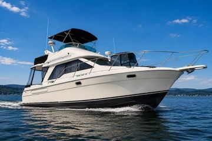

B-Atlas Boat Guide · BAYL-3388
Bayliner 3388 Motor Yacht Flybridge Motor Yacht
1996–2001
The Bayliner 3388 Motor Yacht is the successor to the 3288 family, retaining a two-stateroom, lower-helm and flybridge layout while adding a revised hull and more contemporary styling. Gasoline and diesel twin-inboard installations are documented, so propulsion should be treated as configuration-specific.

- LOA
- 32′ 11″ / 10.03 m
- LWL
- 32′ / 9.75 m
- Beam
- 11′ 6″ / 3.51 m
- Draft
- 2′ 8″ / 0.81 m
- Hull behaviour
- Planing
- Fuel
- Diesel
- Propulsion
- Shaft
- Engine configuration
- Twin Inboard
- Boat family
- Motor Yacht
- Construction
- Fiberglass
Best for
- Family cruising on inland and protected coastal waters
- Buyers wanting two cabins and dual helms around 33 feet
- Owners comfortable with twin-inboard systems
Trade-offs
- Salon circulation is constrained by the mid-cabin stair arrangement
- Low-deadrise hull prioritizes efficiency and space over rough-water comfort
- Twin engines increase operating and service cost
- Gasoline and diesel versions have materially different economics
Known concerns
- No model-specific concern has been promoted to B-Atlas’s evidence threshold. This does not mean the model has no age-, condition- or hull-specific risks.
Inspection focus
- Both engines, gears, shafts and prop-pocket running gear
- Window and deck sealing
- Fuel system and tank condition
- Lower-helm and flybridge control systems
Continue researching
Related boat models
Bayliner 3218 Motoryacht Flybridge Motor Yacht
32.67 ft · Planing
Bayliner 3270 / 3288 Motor Yacht Explorer / Motor Yacht
32.08 ft · Planing
Bayliner 3870 / 3888 Motor Yacht Mid-Cabin Flybridge Motor Yacht
38.17 ft · Planing
Bayliner 3258 Command Bridge Command Bridge Cruiser
32.92 ft · Planing
Bayliner 3788 Motor Yacht Two-Generation Flybridge Motor Yacht
39.33 ft · Planing
Bayliner 3055 Ciera Sunbridge / 305 SB Express Cruiser
31.5 ft · Planing
About this record
B-Atlas preserves uncertainty: missing information remains unknown rather than being treated as a negative. Specifications and guidance describe the model record; individual boats can differ by year, equipment, refit and condition.